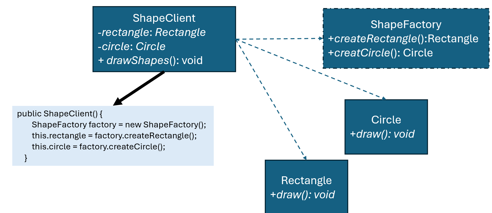

優點
缺點
總評
整體互動仍停留在敘述個人理解與定義層次，未出現深層的認知、元認知或認知合作歷程。未明顯展現超越答案陳述、驗證或反思等更高層次品質，因此屬於表層修正型互動。
interface Shape {
void draw();
}
class Circle implements Shape {
@Override
public void draw() {
System.out.println("Drawing a circle");
}
}
class Rectangle implements Shape {
@Override
public void draw() {
System.out.println("Drawing a rectangle");
}
}
interface ShapeFactory {
Shape createShape();
}
class RectangleFactory implements ShapeFactory {
@Override
public Shape createShape() {
return new Rectangle();
}
}
class CircleFactory implements ShapeFactory {
@Override
public Shape createShape() {
return new Circle();
}
}
class ShapeClient {
private Shape shape;
public ShapeClient(ShapeFactory shapeFactory) {
this.shape = shapeFactory.createShape();
}
public void drawShape() {
shape.draw();
}
}
public class Main {
public static void main(String[] args) {
ShapeClient sh = new ShapeClient(new CircleFactory());
sh.drawShape();
sh = new ShapeClient(new RectangleFactory());
sh.drawShape();
}
}
!@#$報告
此設計有甚麼優點?
這個設計其實在做的事情很單純：把「怎麼建立物件」這件事，從原本直接寫死在程式裡，改成交給工廠去處理。這樣一來，ShapeClient 根本不用知道自己拿到的是 Circle 還是 Rectangle，它只負責呼叫 draw()，其他都不關它的事。
這樣的好處很直接。第一個是彈性變高，今天你想多加一個 Triangle，你不用去動原本的 ShapeClient 或其他舊程式，只要多寫一個 Triangle 跟對應的 Factory 就好。也就是說，功能可以一直擴充，但原本穩定的程式不用一直被修改，出錯機率自然就低。
再來是耦合度變低。以前如果你在程式裡直接 new Circle()，那這段程式就跟 Circle 綁死了，以後要換成別的圖形就一定要改這行。但現在是透過工廠產生，ShapeClient 只認 Shape 這個介面，不認具體類別，所以替換起來很乾淨。
另外一個實際的好處是，如果未來建立物件變複雜（例如要加參數、做初始化、甚至讀設定檔），這些東西都可以集中寫在工廠裡，不會散落在各個地方，維護起來比較輕鬆。
簡單講，這種設計就是把「用什麼物件」跟「怎麼產生這個物件」拆開來，讓程式更好改、也更不容易壞。!@#$
請檢視程式碼介面是否違反 Abstract Factory 模式，並撰寫報告，討論新設計有何優點?

public class ShapeClient {
private Shape shape;
public ShapeClient(ShapeFactory factory) {
this.shape = factory.createShape();
}
public void drawShape() {
shape.draw();
}
}
修改程式，使得執行Main類別